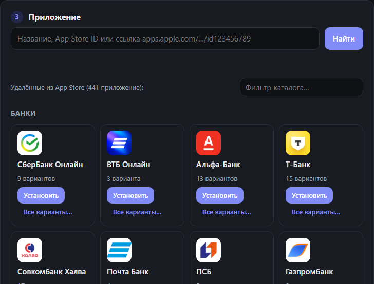

Как вернуть удалённые из App Store приложения на iPhone
Пошаговая инструкция: вход в Apple ID, подключение iPhone, выбор приложения и установка по USB.
Приложение, которое когда-то скачивалось с вашего Apple ID, остаётся в истории покупок, даже если из магазина его убрали. «Возврат» берёт оригинальный IPA с подписью Apple из этой истории и ставит его на iPhone по кабелю. Джейлбрейк и переподпись сертификатами не нужны.
Важное условиеРаботает только для приложений, которые уже скачивались с вашего Apple ID. Если приложения в истории нет, смотрите отдельную статью.
Что понадобится
- Компьютер с Windows 10/11, macOS 12+ или Linux x86_64.
- Кабель для iPhone.
- Apple ID, с которого приложение скачивалось раньше (и устройство для кода двухфакторной аутентификации).
- Windows: приложение Apple Devices из Microsoft Store или iTunes. Linux: служба
usbmuxd. На macOS драйвер встроен.
Шаг 1. Скачайте и запустите программу
Готовые сборки лежат в разделе «Скачать». Python ставить не нужно: он уже внутри.
Шаг 2. Войдите в Apple ID
Введите логин и пароль. Если включена двухфакторная аутентификация, появится поле для кода: введите код с устройства Apple и снова нажмите «Войти». Первый вход может занять 1–3 минуты.

Шаг 3. Подключите iPhone
Подключите телефон кабелем, разблокируйте его и нажмите «Доверять этому компьютеру». iPhone появится в списке. Если его нет, нажмите «Обновить список».

Шаг 4. Выберите приложение
Найдите приложение в каталоге (в нём 441 приложение) или введите название, App Store ID либо ссылку вида apps.apple.com/…/id123456789. Нажмите «Установить». Не отключайте кабель и не блокируйте экран, пока идёт установка.

Можно нажать «Установить» у нескольких приложений сразу: они встанут в очередь. Отменить можно и ожидающие, и идущую загрузку — кнопкой «Отменить» в карточке.

Вернуть много приложений сразу
Если вы пользовались многими банками, их не нужно ставить по одному: «Вернуть всё сразу» найдёт в истории покупок всё, чего нет на iPhone. А то, что уже стоит, в каталоге отмечено «✓ На iPhone».
Дальше: обновления
App Store такие приложения не обновляет, но «Возврат» умеет: как обновлять приложения и саму программу.
Если что-то пошло не так
- Нет в истории покупок — что делать.
- Нужна более новая iOS — как поставить старую версию.
- iPhone не находится — проверьте драйвер и разрешение «Доверять этому компьютеру».
Вернуть приложение на iPhone
Бесплатно, с открытым исходным кодом, для Windows, macOS и Linux.
Скачать «Возврат»